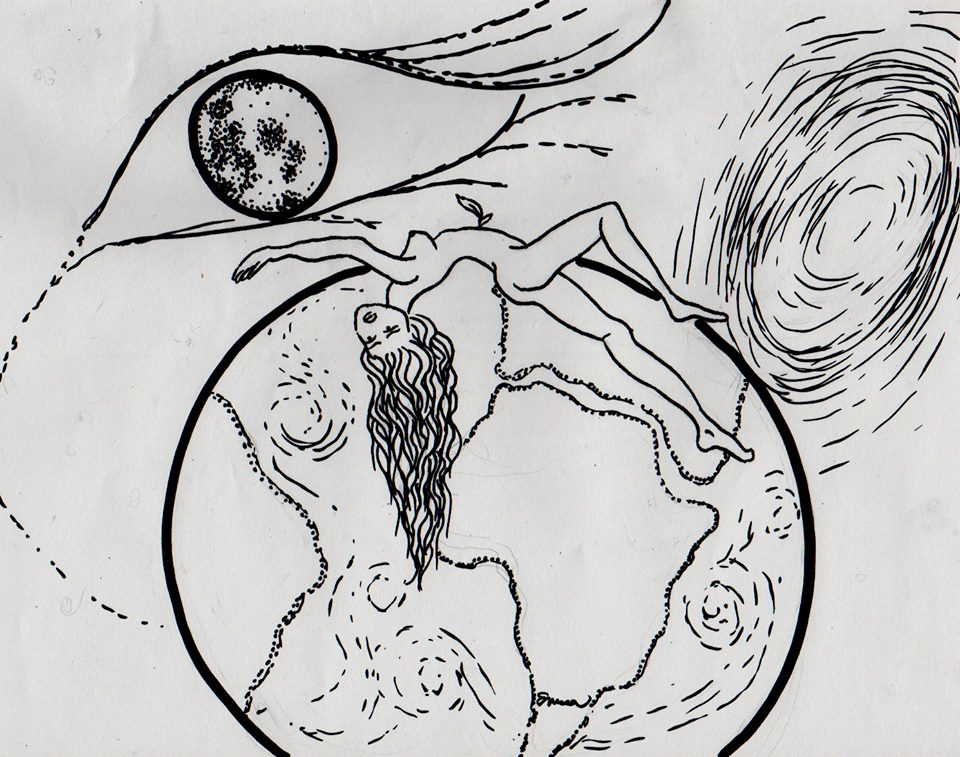

« předchozí článek | obsah čísla | následující článek »
Roztahují se všude. Pracky toho tvora nazývaného Aliance. Její úředníci už dokážou šmírovat každého, na vzdálenosti od stařenky Země vůbec nezáleží. Dokážou do vás nacpat bandu nanitů, těch mikroskopických robotických hajzlíků, špiónů, budou s vámi všude a nahlásí i to, co si čtete na záchodě. A taky vás můžou léčit a vyléčit, nebo odpravit, to záleží na programu a choutkách toho, kdo je do vás dostal.
Nevyhovuje mi to. Nemám ráda, když mě někdo špehuje. Nemám ráda, když mi někdo věnuje pozornost. Vždycky to spíš vede k tomu, že mi vrazí pár facek, než k tomu, že mi koupí misku polívky.
A proto jsem tady. Na nejzapadlejším šutru poletujícím vesmírem. Tedy pardon, planetě se jménem, co ani nestojí za řeč. Ale jestli chcete, je to Maarr. Asi ho objevil nějaký tuberácký astronom a jeho chrchlání si omylem vyložili jako název.
Jsme tu, já a pár naprostých nebožáků, abychom to tady zplanýrovali, jak jen to půjde. Tak jak jsme prý oddělali Zemi, tak jako jsme odpravili Hora, jako hodně dalších, který mě taky moc nezajímají, protože se na nich špatně žije, jsou to mrtvý kusy skály, ne jsou to ohromný pískoviště, kde zůstali už jen poslední tvrdohlavý cvoci nebo největší zoufalci.
Celý lidstvo je posedlý stromy. Nikdy jsem nepochopila, proč. Víte, na těch pár planetách, kde jsem se krátkodobě vyskytla, to byly takový neduživý chudinky, hubený a docela blízko smrti, žádná krása a žádný užitek. Teda pro mě. Jo, pár míst znám, kde mají víc stromů pohromadě a říkají tomu lesy. A většinou ty lesy jsou za tlustou vysokou zdí a motá se tam spousta dobře živených a dobře cvičených chlápků s omračovačema. A když si chcete ten zelený skvost okouknout, naperou do vás víc, než povolenou dávku elektriky. Možná proto, že dřevo je docela slušný platidlo. Mít les, jste pracháč.
No a tady si tu jen tak roste ohromný jmění. A nejsou to žádný mrňavý ubožátka a ani ty pracháčský lesy nestojí proti tomuhle za nic. A co my s nima děláme? Kácíme je. Pěkně kousek po kousku, podřezáváme jim krky a vraždíme je. Je mi to celkem fuk. Lidi se taky vražděj, zvířata vraždíme, tak co si lámat hlavu s nějakým zeleným roštím. Tedy, máme tu jednoho chlápka, co pořád blábolí o kyslíku a biosféře, ale stejně tu je a dělá to samý co my.
„Běž se zapsat do knihy!“
Den jako vyšitý. Člověka nenechají v klidu odpočinout.
„Jasně, Velkej fousáči!“
Vážně je velkej a fousatej, takový jsou tu všichni, ale Jula hrozně zlobí, když mu tak říkám, takže si to dost užívám a oslovuju ho tak pořád.
Dosedl vedle mě, ve snaze se družit. Poznala jsem to podle toho, jak soustředěně se snažil najít téma ke konverzaci. Nakonec ho našel.
„Koukej, Red, nemůžeš bejt pořád mimo. Nechceš s nikým mluvit, mračíš se. Měla bys bejt trochu společenštější.“
Neměl si vybírat tohle téma. Dost na tom, že mi říkal Red. Jo, mám červený vlasy.
Zavrčela jsem cosi neurčitého a zvedla jsem se ze země, která byla pokrytá příjemně měkkou trávou, ta zelená věc je dost pohodlná a navíc vůbec nepráší. Tuhle taky pracháči za tou svou zdí nemají. Vsadila bych se, že jim tam živoří něco neduživýho, pichlavýho. Podle Kyslíka ji tady taky zničíme.
Kniha je elektronický deník, který je nutný pravidelně krmit informacemi. O tom, co jsme dělali a taky vás proklepne, jestli nemáte třeba mor nebo krupičnatku, něco, co by vyvraždilo všechny okolo, čímž by přišla firma o dost peněz. Není nejlevnější poslat novou loď do takový dálky.
Neměla jsem Knihu ráda. Jednou jsem se na to jejich hlášení a buzeraci vykašlala a ten křáp spustil poplach. Od tý doby mi to Jul připomíná každej večer a já se podvoluju. Randál taky nemám ráda.
Mohl by to být tichý kšeft, máme tu takový sluchátka, co vám seberou zvuky zvenčí a vpustí jen to, co musí, konverzaci s parťákem, nebo houkačku, co ohlašuje konec směny. Jenže já si ty zatracený krámy sundávám, potí se mi uši a příšerně to tlačí. Navíc mě děsí, stát se hluchou, když kolem mě je neznámá krajina, houštíčka, ohromný rostliny s velkýma zubatýma listama, hustý větve stromů, těch, který se chystáme odrovnat. Mám dojem, že to nějak vědí, podivně se třesou, i když není vítr. Taky polykají rachot pil a drtiček. Nikomu tohle nesvěřuju, je to šílenost, ale šla jsem se před pár dny vyčůrat, nejsem zvlášť háklivá, takže to byl jen kousek od místa, kde jako pominutá vrčela drtička, zalezla jsem jen za jeden strom a bylo po rámusu. Klidný, absolutní ticho, pak nějaký skřehotání a bzučení. Skončila jsem svý záležitosti v rekordním čase a vypadla odsud.
Přestává se mi tu líbit. Kyslík se zcvoknul. V noci se prostě sebral a odkráčel si to do lesa, jen v tom v čem spával, bez bot a v trenýrkách. Jul se za ním hnal, ale kluk idealistická mu zmizel v podrostu. Koukala jsem na to z okna svojí buňky. Nějak špatně spím, tak mi toho moc neujde. Ale do ničeho se taky nemíchám. Tak mi nebylo příjemný, když Jul začal bušit na moje dveře. Dělala jsem, že ho neslyším. Nepřestával.
„Red! Vím, že nespíš. Musíme ho jít hledat!“ hulákal. Houby musíme. Nevšiml si, jak hnusná ta zelená věc je?
Otevřela jsem rycem a praštila ho dveřma do ramene.
„Hele, nikam nejdu. A ty, jestli máš rozum, taky ne. Tenhle les je divnej. Kyslík tam neměl lézt.“
Koukal na mě nazlobeně, přešlapoval, a myslím, že zvažoval vrazit mi pár facek. To já na lidech poznám, když je tohle napadne. Byl to ale charakter. Neudělal to.
„Když se bojíš, nech to bejt. Jdu sám,“ ucedil. A šel. A já to nechala bejt. Lehla jsem si a nasadila ty ohlušovací sluchátka. Nechtěla jsem nic vědět. Ale taky jsem nespala. Musela jsem na ty dva pitomý chlapy myslet, musela jsem myslet na les, na to, co tam bylo.
Jul ho našel. Uřvanýho, poškrábanýho a potlučenýho. Od tý doby už Kyslík o stromech nemluví tak hezky a hlavně to nedává smysl. Blábolí, kňourá a slintá. Nikdo neví, co se mu tam stalo.
Nechci chodit na směny. Nechci do lesa, ale nikdy to nepřiznám. Všichni se trochu bojí, po tom, co se stalo Kyslíkovi. Já se bojím hodně. Slyším už ten podivný šepot i přes řev drtičky a pil. Když sáhnu na poražený strom, chvěje se mi pod rukama a vydává zvláštní, skoro lidský teplo. Hnusí se mi to. Po zemi se plazí takový hubený zelený šlahouny, mám pocit, že to roste před očima. Dupu na to, ale asi to přestanu dělat, cítím, jak mi to klouže pod podrážkou a mrazí mě z toho v zádech.
Začaly se mi zdát sny. Lítací. Vznáším se nad planetou a koukám se na les. A pak kouká on na mě, mrkne ohromným modrým okem, že jako kámoši a spiklenci. Budím se celá rozklepaná. Už nechci spát.
Dneska se ke mně na směnu přidal Kyslík. Nemá v lese co dělat, jenže ho taky nemá kdo hlídat v táboře. Brblal si něco pro sebe a sledoval mě na každým kroku.
„Tohle by nešlo. Pleteš se mi. Vezmu tě po tý tvý zcvoklý palici, jestli se někam neusadíš a nepřestaneš se tu motat,“ utrhla jsem se na něj. Podívání na něj není zrovna pěkný, snad by mi ho bylo i líto. Zhubnul a ztratil barvu, je z něj mátoha. Neusadil se, ale držel se o něco dál.
Neměla jsem čas ho pořád sledovat, nějakou chvíli jsem cpala větve do drtičky. Když jsem si dala pauzu, byl Kyslík fuč. Kruci chlap! Kvůli němu jsem vlezla zas mezi stromy, hloub do podrostu, nohy se mi bořily do nějaký břečky. Našla jsem ho, jak si nacpává kapsy velkýma černýma bobkama, nějaký semena asi. Chechtal se a brečel zároveň. Vyvláčela jsem ho ven z lesa a zamkla v jídelně. Později jsem si vzpomněla, že bych mu měla vysypat kapsy a to svinstvo vyházet.
Měla jsem to udělat. Než skončila směna, nebyl už Kyslík ani jídelna. Byl jen nový kus lesa. Sežral ho, vyrostl z něj. Chci odtud pryč! Všichni chceme. Raketa bude naložená za pět dní. Jestli taky nezaroste.
Sny jsou čím dál tím horší. O to víc, že v nich začínám mít les ráda. Jeho modrá očka mě k sobě lákají jako bludičky.
Dřeme jako blázni. Chceme odletět dřív. Vraždíme, porcujeme, drtíme, nakládáme. Nemluvíme. Ale ticho tu není. Les začal vydávat nové zvuky. Pravidelný tepání a nesrozumitelný šepot. Zdá se mi, že to mluví Kyslík.
Polovinu noci jsem to poslouchala a modlila se, ať toho les nechá. Chlapi jsou hádaví, mrzutý, něco je děsí, tuším, že je to to samý, co straší mě. Zkusila jsem spát pod práškama. Špatnej nápad.
Vzbudila jsem se v lese. V tom nejhustším houští. Podrápaná, kapsy nacpaný černejma bobkama. Něco z toho neřádstva jsem vyházela, ale pak už to nešlo. Ruce se mi třásly jak po celým dni práce s pilou. Navíc jsem si je chtěla nechat. Hrozně moc. Asi hodinu jsem se motala tím roštím, zelený šlahouny pod bosýma nohama mě příjemně hřály. Začínalo se mi to líbit. Potkala jsem Jula. Vůbec mě nevnímal, mě zas bylo celkem jedno, co on tam dělá. Kapsy kalhot měl naditý, věděla jsem čím asi.
Odletěli jsme. Nikdo nemluvil, nesmál se. Všichni si každou chvilku kontrolovali kapsy. Dělala jsem to taky.
„Víš, že nám to na celnici seberou? Nesmíme nic vozit. Semena už vůbec ne,“ povídal mi Jul. Myslela jsem, že je na mě naštvanej, asi i byl, ale teď bylo všechno jinak. Na tom, co bylo dřív, nezáleželo. Něco nás změnilo. O tom, co mi povídal, jsem taky přemýšlela a děsilo mě to. Uklidňovalo mě ale, že jsem cítila, jak mě semena tlačí do stehna, že je pořád mám.
Tři měsíce na nejbližší překladní stanici, tři měsíce a mohli jsme z rakety. Kontrola byla důkladná, koukala i tam, kam se slušnej člověk nedívá. Bylo mi to jedno. Jindy by mě brali všichni čerti, ale ne teď. Nezáleželo na tom. Věděla jsem, že nic nenajdou. Že semena mám dobře schovaný.
Trvalo dlouho, než jsem se dostala na Zem. Když jsem vystoupila z rakety čtvrtý třídy, rozvrzaný rachotiny, už jsem měla povědomí o tom, co mě čeká. Viděla jsem to shora. Rozpukaná, vyprahlá pláň, tu a tam suchý keřík, nebo strom. Ubohá k pláči.
V hale raketodromu jsem potkala Jula a ostatní z Maarru. Pozdravila jsem je, usmála se na ně. Nepřekvapilo mě, že je tady vidím. Taky sem museli. Taky je pronásledovaly sny.
Šla jsem daleko, nechala nanicovatou civilizaci za sebou. Našla jsem si místečko se suchou, žlutou trávou. Slušný plácek pro to, co jsem měla v plánu. Kdesi hluboko pod povrchem byla voda. To bylo dobře. Položila jsem se na zem, teplou a pohodlnou. Jen ta tráva tu nebyla měkká jako na Maarru. Nebe bylo kýčovitě modré. V rukou a v nohou mě zašimralo. Už to začalo. Těžce se mi dýchalo, přesto jsem se cítila spokojená. Poprvé ve svým ubohým životě jsem dělala něco, co mělo smysl.
Semena vyklíčila. Opustila schovávačku v mém těle, rašila na mně. Odolná, bujně rostoucí, naděje pro tuhle skomírající planetu. Naprogramovaná šířit život. Chtělo se mi spát. Moc spát. Víčka mi pomalu klesala, usínala jsem, než se tak stalo, modrá obloha se změnila v ohromné oko. Spiklenecky na mne mrklo.
